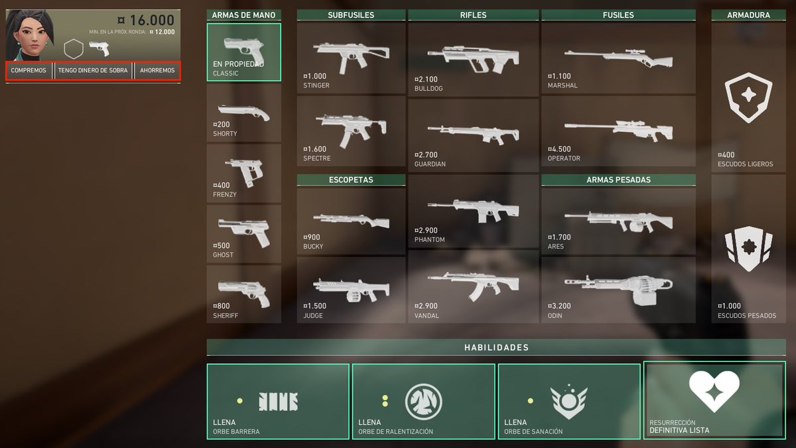
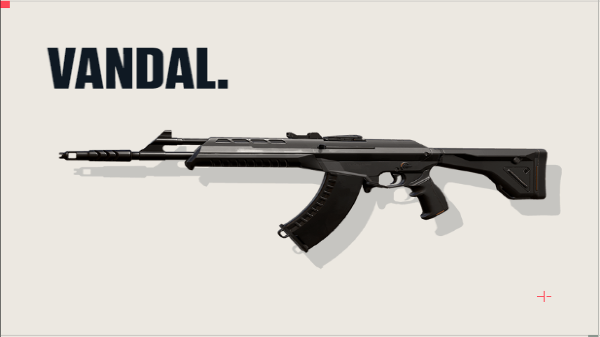
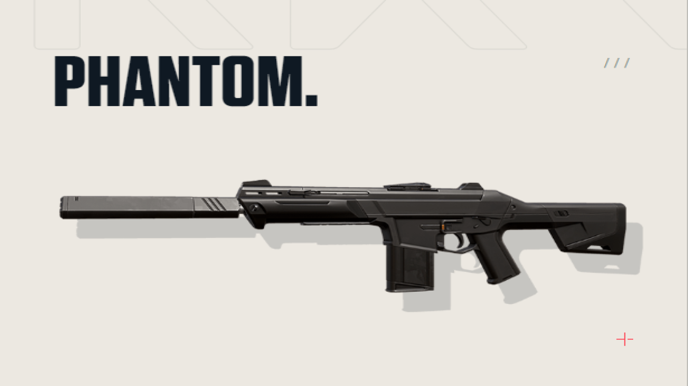

VANDAL VS PHANTOM

Es bien sabido que en el VALORANT, existen 2 armas principales las cuales son VANDAL y PHANTOM, estas 2 valen 2900 creditos, para sacar el mejor provecho de cada una
se debe saber que en ciertos mapas funcionan mejor o terriblemente peor, asi que yo te dire en que mapas deberias usar cada arma;
VANDAL

La vandal es una arma muy buena a largas distancias, con una cadencia de disparo media, wallbang medio, un cartucho de 25 balas mas una reserva de 3 cartuchos con un total
de 100 balas, el headshot a la cabeza son de 160 puntos de daño. Esta opcion nos ofrece en duelos largos una ventaja contra la PHANTOM, en mapas como bind, breeze, icebox se
suele tener pasillos largos con sites muy abiertos, con lo que la vandal suele ser la mejor opcion, en pearl y fracture es un 50% y 50% para cualquiera de las 2 opciones
| CUERPO |
0-50m |
| CABEZA |
160 |
| TORSO |
40 |
| PIES |
34 |
PHANTOM

La phantom, a diferencia de su adversaria, tiene una cadencia de disparo alta, de wallbang igual medio, un cartucho de 30 balas mas una reserva de 3 cartuchos con un total
de 120 balas, el headshot a la cabeza son de 156 puntos solamente de 0 a 15 metros de daño. Esta opcion nos ofrece en lugares mas cerrados, una opcion agresiva y preparada para
abrir un site de mejor manera, mapas como ascend, haven, split es obligatorio que casi todos los agentes usen esta opcion, aunque existen excepciones..., estos mapas tienden a ser
lugares mas cercanos y cerrados, con lo que la mejor opcion ofensiva y defensiva es la PHANTOM, en pearl y fracture tambien es un 50% y 50%.
| CUERPO |
0-15m |
15-30m |
30-50m |
| CABEZA |
156 |
140 |
124 |
| TORSO |
39 |
35 |
31 |
| PIES |
33 |
29 |
26 |